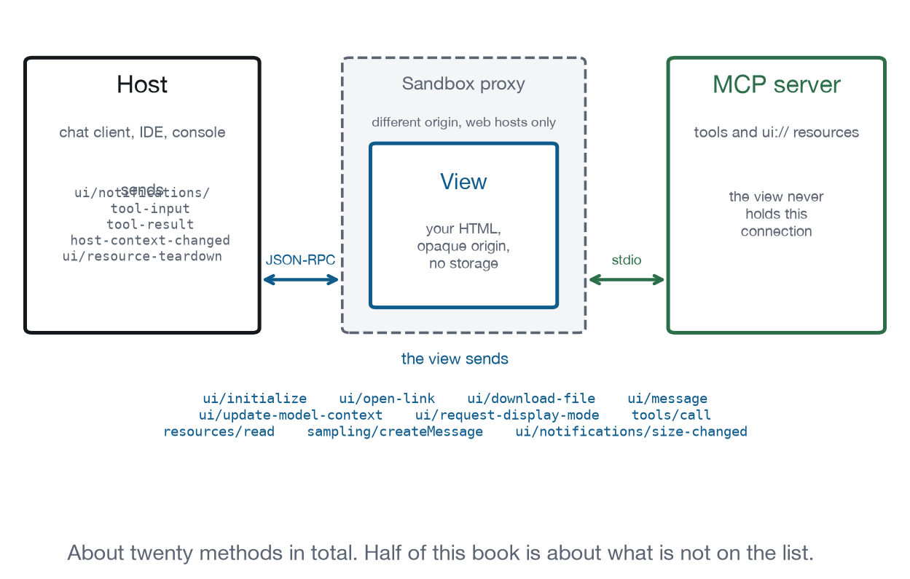

Chapter 2
What Crosses the Boundary
The whole wire protocol in one chapter: the handshake, the twenty messages, the double iframe, and the four ways a view finds out what it was rendered for.
JSON-RPC 2.0 over postMessage, in both directions, with about twenty methods. That is the entire protocol and you can read all of it in an afternoon, which is unusual enough to be the best thing about this extension.
There is no proprietary bridge object, no injected global to wait for, and no framework you have to adopt to participate. A view that constructs its own JSON and calls parent.postMessage is a fully conformant view. This chapter is the map that every later chapter refers back to.

Why are there two iframes?
In a web host, and the reason is that the host’s origin must never share a document with content a server sent. If it did, a view could reach the host’s own scripts and storage through ordinary same-origin access, and no amount of message validation would help.
Desktop and native hosts render your HTML in one sandboxed iframe. Web hosts must use two: an outer sandbox proxy on a different origin, and your view inside it.
The proxy sends ui/notifications/sandbox-proxy-ready when it can accept work. The host answers with ui/notifications/sandbox-resource-ready, which carries the raw HTML, the CSP configuration, and the permission set. The proxy builds the inner frame with those policies applied, then forwards every message in both directions except the ones whose method begins ui/notifications/sandbox-.
You do not implement any of that. It matters for two reasons. First, your messages pass through a relay, which is why the specification tells the proxy never to originate a request of its own: it would have to synthesise request ids, and ids belong to the parties that own them. Second, your view’s origin is opaque. That single fact explains more surprising behaviour than anything else in this book, and Chapter 4 takes it apart.
What happens at startup?
The view speaks first.
Illustrative, not run
{ "jsonrpc": "2.0", "id": 1, "method": "ui/initialize",
"params": {
"appInfo": { "name": "data-explorer", "version": "1.0.0" },
"appCapabilities": { "availableDisplayModes": ["inline", "fullscreen"] },
"protocolVersion": "2026-07-28" } }The host answers with four things: the negotiated protocolVersion, its own hostInfo, a hostCapabilities object, and a hostContext object. Then the view sends ui/notifications/initialized, and only after that notification is the host permitted to send anything at all.
That ordering is a real constraint and the source of a genuinely nasty class of bug. A view with a syntax error never runs, so it never sends ui/initialize, so the host waits forever and the user sees an empty rectangle. Nothing errors. Nothing logs. The frame simply sits there. The conformance harness in this repository treats a missing handshake as a failing test for exactly that reason, and Chapter 26 explains why that is the single highest value check you can run.
What will the host do for me?
hostCapabilities is the list of things the host is willing to do on your behalf, and every field in it is optional. The absence of a field is a complete answer rather than an omission to work around: no openLinks means links will not open, today, in this host, and there is no second route to try.
| Field | The host will |
|---|---|
openLinks |
Open an external URL for you |
downloadFile |
Save a file you generate |
serverTools |
Proxy tools/call and tools/list to your server |
serverResources |
Proxy resources/read to your server |
logging |
Accept notifications/message |
message |
Accept content into the conversation |
updateModelContext |
Accept context for the model’s next turn |
sampling |
Run its model on your prompt |
sandbox |
Report the CSP and permissions it actually applied |
The last one deserves attention. Your server requests permissions and CSP origins in the resource metadata; hostCapabilities.sandbox is what the host granted. Those can differ, and a view that assumes the request was honoured is a view that breaks in the host that declined.
What will the host tell me?
hostContext describes the environment rather than the host’s willingness. It carries theme, styles (CSS custom properties and an optional font block), displayMode and availableDisplayModes, containerDimensions, locale, timeZone, userAgent, platform, deviceCapabilities, safeAreaInsets, and toolInfo describing the tool call that caused this view to exist.
Every field of it can change later, through ui/notifications/host-context-changed, which carries only the keys that changed. Merge, do not replace. A view that treats the notification as a complete context object will discard the locale the first time somebody toggles dark mode.
The whole message list
Requests the view can send, each of which the host may refuse:
| Method | Purpose | Chapter |
|---|---|---|
ui/initialize |
Start the session | 1 |
ui/open-link |
Open a URL outside the sandbox | 10 |
ui/download-file |
Hand a file to the host to save | 10 |
ui/message |
Put content into the conversation | 17 |
ui/update-model-context |
Replace what the model knows about this view | 17 |
ui/request-display-mode |
Ask for inline, fullscreen, or picture in picture | 6 |
tools/call |
Call a server tool through the host | 19 |
tools/list |
List the server tools available to you | 19 |
resources/read |
Read a server resource through the host | 11 |
sampling/createMessage |
Ask the host’s model for a completion | 17 |
ping |
Check the channel | 14 |
Notifications the view can send, which get no answer: ui/notifications/initialized, ui/notifications/size-changed, ui/notifications/request-teardown, notifications/message, notifications/tools/list_changed, and core MCP’s notifications/cancelled.
Notifications the host sends to the view: ui/notifications/tool-input-partial, ui/notifications/tool-input, ui/notifications/tool-result, ui/notifications/tool-cancelled, ui/notifications/host-context-changed, and notifications/progress.
And two requests the host sends to the view, both of which need an answer: ui/resource-teardown, and tools/call with tools/list when the view has registered tools of its own.
That is the entire protocol. Twenty-odd messages, most of them optional, and half of this book is about the things that are not on that list: dialogs, undo, focus, persistence, and the fourteen capabilities in Appendix B that have no mechanism at all.
How do I find out why I was rendered?
A view is rendered because a tool was called, and finding out which tool, with what arguments, and what it returned happens in four steps that arrive in a fixed order. Handling only the last one is the common shortcut, and it costs you the ability to render anything until the tool finishes.
hostContext.toolInfo arrives in the initialize result and names the tool. ui/notifications/tool-input-partial may arrive zero or more times while the model is still writing the arguments, carrying best-effort recovered JSON with unclosed brackets closed. ui/notifications/tool-input arrives exactly once with the complete arguments. ui/notifications/tool-result arrives when the tool finishes, carrying the standard CallToolResult, or ui/notifications/tool-cancelled arrives instead if it did not.
Rendering something useful during the partial phase is the difference between an application that feels instant and a spinner that lasts as long as the model does. Chapter 19 has the demonstration.
How do I read a transcript?
The transcript pane on every page in this book prints these messages as they happen, and learning to read one is the fastest way to understand what an embedded application is actually doing. A healthy startup looks like this, every time:
Captured output from conformance/transcripts/lab-surface.json
app→host ui/initialize
host→app result
app→host ui/notifications/initialized
app→host ui/notifications/size-changed { width: 836, height: 147 }
app→host ui/notifications/size-changed { width: 836, height: 306 }Five lines, four facts. The view started. The host answered. The view sent ui/notifications/initialized, so the host may now speak. And it reported its size twice, at 147px then 306px.
The second size is not a bug. Every view draws asynchronously, so the first report measures an empty document. A host that acted only on the first would put a 147px frame around 306px of content.
The absence of lines is as informative as their presence. No ui/initialize means the view’s script never ran. No ui/notifications/initialized means it threw between connecting and finishing. No size-changed means it never observed its own content, which in a flexible container means a frame that never grows.
content or structuredContent?
A tool result carries a content array and a structuredContent object, and they exist because there are two readers with completely different needs. Using one field for both is the most expensive mistake available in this extension, and the most invisible: everything works, it just costs several times more per turn and the model answers questions about the data less well than it would have from a summary.
content is what the model sees. It should be a sentence, not a data dump: if the model is going to read three hundred table rows it has just paid for, the view is about to render them anyway and the model gains nothing. structuredContent is what your view sees, and it never reaches the model’s context.
Getting this backwards is the most expensive mistake in the whole extension, because it is invisible. Everything works; it just costs four times as much per turn and the model answers questions about the data less well than it would have from a summary.
log.messageExtendedLevel 1On the wireSend a log line to the host for debugging and telemetry.
- Messages
notifications/messagelogging- Ground
- The MCP Apps extension defines a message for it.
- Recipes
- none yet
- Demo
- lab-handshake
resource.readExtendedLevel 2On the wireRead a server resource through the host proxy.
- Messages
resources/readserverResources- Ground
- The MCP Apps extension defines a message for it.
- Recipes
- File Explorer
- Demo
- lab-handshake
Which bridge should I use?
Everything above is implemented by @modelcontextprotocol/ext-apps, which ships both halves: App for the view side and AppBridge for the host side. It handles schema validation, request timeouts, capability assertions, and the ResizeObserver wiring for size reporting. Use it.
This book ships its own bridge instead, in about two hundred and forty lines, for one reason: the transcript pane on every page has to have nothing hidden behind it. When you press a button in a demonstration and see ui/update-model-context appear in the log, the path from the click to the message is short enough to read. That is a pedagogical choice, not a recommendation.
Both are in the repository, and the source drawer on every demonstration shows whichever one that page is actually running, so you can compare the two rather than take this paragraph’s word for it.
Conformance checks
ui/initializereceives a result carryingprotocolVersion,hostInfo,hostCapabilitiesandhostContext.- Nothing is sent to the view before
ui/notifications/initialized. - Every capability present in
hostCapabilitiesbehaves as described when used. ui/notifications/host-context-changedcarries only changed keys.ui/notifications/tool-inputarrives exactly once, after any partials.- A view with a script error produces no handshake, and the host surfaces that rather than waiting silently.
- Messages from the frame are identified by
event.source, not by origin.